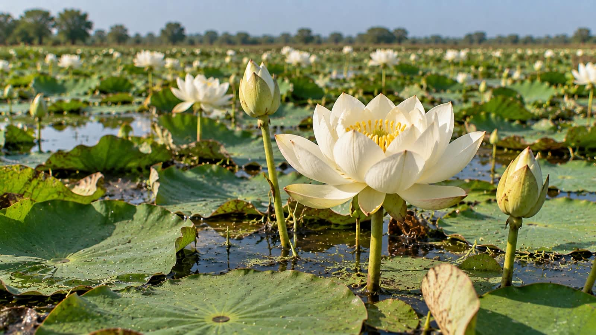
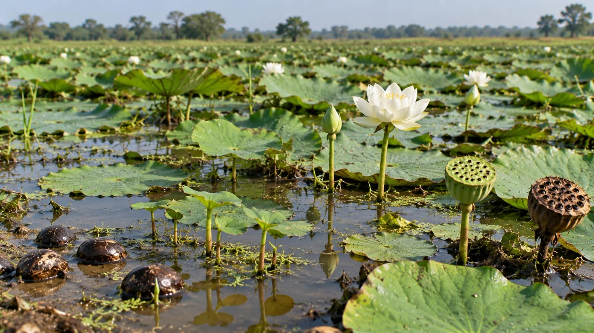
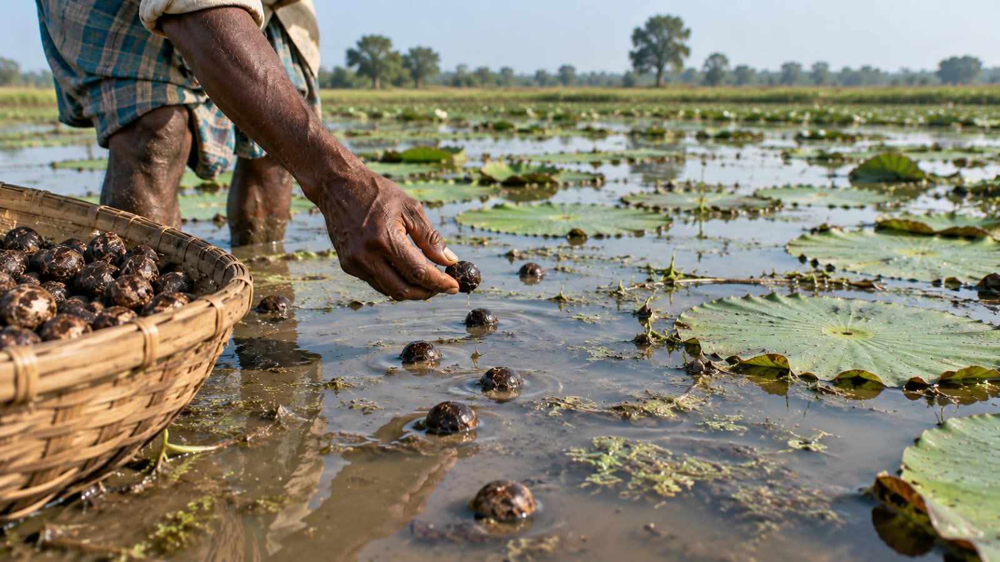

MITHILA REGION
Darbhanga
Historical Makhana Capital & home to the ICAR National Research Centre for Makhana, central mandis, and certified GI seed grading.

Direct processor & premier B2B wholesale exporter of authentic raw Makhana (Foxnuts), connecting sacred Mithila wetlands to global food enterprises.
Ancient Mithila Foxnut (Euryale Ferox) — 100% natural plant protein, low glycemic index, and essential minerals.



Over 85% of the world's raw Makhana flourishes across the tranquil freshwater wetlands, perennial floodplains (Chaurs), and traditional oxbow pond ecosystems of Northern Bihar.
Historical Makhana Capital & home to the ICAR National Research Centre for Makhana, central mandis, and certified GI seed grading.

Famous for ancient village water tanks and generation-trained Mallah harvester communities specialized in meticulous underwater hand-scavenging without shell damage.

The highest production volume district in modern times, driving commercial plantation expansion, modern processing clusters, and bulk export aggregation.

Strategically positioned on the eastern trade axis, connecting vast floodplain wetlands with premier logistics rail routes for pan-India wholesale dispatches.

Expansive natural wetland depressions created by the dynamic Kosi river basin yield high-density seeds known for superior roast expansion and clean crispness.
Bordering the sub-Himalayan foothills with perennial high precipitation, nurturing mineral-rich organic aquatic pools with year-round freshwater recharge.
From the quiet wetlands of Bihar to the delicate white bloom in your bowl, every Makhana passes through a patient journey shaped by water, season, skilled hands and generations of farming knowledge.
The journey begins in the water bodies of Bihar. Traditional Makhana is cultivated in ponds and wetlands where the crop grows in standing water, rooted in the aquatic environment.
“Before the first seed is sown, the water must be ready to receive it.”
BIHAR WETLANDS
STAGE 01
From muddy pond beds to pure white puffed blooms — follow the step-by-step roadmap of how authentic Bihar Makhana is crafted.
Mallah divers forage muddy wetland beds by hand to collect fresh black seeds (*Guri*) without cracking the outer shell.

Freshly washed seeds are spread across open bamboo mats under natural sunshine to stabilize moisture down to 31–33%.
Dry seeds are sieved through multi-mesh iron sieves (*Jharni*) into 5 uniform sizes to guarantee identical heat absorption.
Constant high-heat stirring in cast-iron pans loosens the delicate inner white kernel from the rock-hard exterior coat.
A swift, precise manual strike with a hardwood mallet (*Thapi*) instantly pops the red-hot kernel into a crisp white puff.

Popped grains are calibrated into 3 to 7 Suta grades, dedusted, and hermetically sealed in moisture-barrier master packaging.
Tracing our path from local Mithila wetland harvests to trusted global B2B wholesale distribution.
The idea behind MAKHANAM: connecting Bihar's authentic makhana directly to wider commercial markets.
Developing close partnerships within the local Mallah harvesting communities and wetland growers.
Creating standardized 3 to 7 Suta grading, calibrated sieving, and moisture-controlled packaging.
Supplying commercial food enterprises, FMCG snack brands, distributors, and institutional buyers.
Taking Bihar's GI-tagged makhana heritage to broader domestic and international export destinations.
Authentic raw field recording from our Bihar harvest. Experience the generational Mallah divers foraging organic seeds from mineral-rich wetland beds, curing under the sun, and wood-fire popping with rhythmic precision.
Mallah artisans dive into natural aquatic wetlands to hand-gather spiny lotus seeds without mechanized disruption.
High-temperature roasting in earthen pots and rhythmic wooden mallet strikes instantly expand the seed into a crisp white bloom.
Mechanical sieving calibrates lots from 3 Suta Pearl to 7 Suta Super Jumbo for dependable global wholesale distribution.
Standardized millimeter sizing ensures reliable portion control, puff volume, and pricing transparency.
6+ SUTA
Characterized by significant puff volume and a pristine white bloom. Favored for premium retail snack lines, gourmet roasting, and luxury gift hampers.
 5 SUTA
5 SUTA
Well-rounded grains with strong crisp density. Provides an ideal balance of visual presentation and consistent volume for branded consumer packages.
 4 SUTA
4 SUTA
A dependable commercial grade offering excellent crunch and uniform seasoning absorption. Well-suited for everyday snack blends and trail mixes.
 3 SUTA
3 SUTA
Uniform smaller grains designed for high-efficiency confectionery, multi-ingredient breakfast blends, and institutional food applications.
Partner directly with our Bihar processing facility for container loads, grade samples, and dependable export supply.